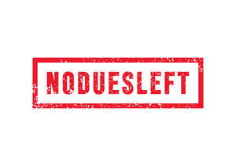
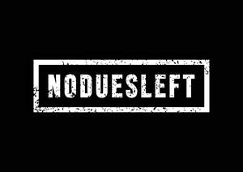

Trade Mark Journal No.2025/040 3 October 2025
UK00004268782 24 September 2025 (18,25)
Mark 1

Mark 2

- Class 18
- Leather and imitation leather; Imitation leather; Leather (Imitation -); Leather and imitations of leather; Imitation leather bags; Imitations of leather; Moleskin [imitation of leather]; Moleskin [imitation leather]; Cases of imitation leather; Leather; Straps made of imitation leather; Bags made of imitation leather; Sheets of imitation leather for use in manufacture; Mycelium-based imitation leather; Handbags made of imitations leather; Key cases of imitation leather; Imitation leather hat boxes; Imitation leather sold in bulk; Attache cases made of imitation leather; Travelling bags made of imitation leather; Leather cloth; Leather handbags; Synthetic leather; Handbags made of leather; Polyurethane leather; Leather purses; Laces (Leather -); Leather laces; Leather for furniture; Saddlery of leather; Card holders made of imitation leather; Boxes of leather or leather board; Leather cords; Leather for shoes; Leather briefcases; Leather thongs; Briefcases made of leather; Straps (Leather -); Leather straps; Tanned leather; Briefcases [leather goods]; Leather cord; Leather wallets; Leather bags; Leather for harnesses; Bands of leather; Harness made from leather; Imitation fur; Leather pouches; Pouches of leather; Straps of leather [saddlery]; Leather cases; Leather suitcases; Bags made of leather; Vegan leather; Furniture (Leather trimmings for -); Trimmings of leather for furniture; Leather trimmings for furniture; Leather leashes; Leashes (Leather -); Girths of leather; Unworked leather; Leather boxes; Boxes of leather; Studs of leather; All-purpose leather straps; Sheets of leather for use in manufacture; Furniture coverings of leather; Coverings (Furniture -) of leather; Imitation hides; Umbrella covers; Covers (Umbrella -); Umbrella bags; Umbrella handles; Umbrella sticks; Umbrella or parasol ribs; Ribs (Umbrella or parasol -); Umbrella frames; Umbrella rings; Umbrellas; Covers for umbrellas; Umbrellas and parasols; Sun umbrellas; Patio umbrellas; Parasols [sun umbrellas]; Outdoor umbrellas; Telescopic umbrellas; Garden umbrellas; Bags for umbrellas; Sun umbrellas [hand-held]; Beach umbrellas; Sunshade parasols; Frames for umbrellas or parasols; Golf umbrellas; Rainproof parasols; Frames for umbrellas; Umbrellas for children; Beach umbrellas [beach parasols]; Covers for parasols; Combination walking sticks and umbrellas; Metal parts of umbrellas; Parasols; Plein air umbrellas; Japanese paper umbrellas (karakasa); Japanese paper umbrellas [karakasa]; Beach parasols; Luggage covers; Fitted protective covers for luggage; Japanese oiled-paper umbrellas (janome-gasa); General purpose sport trolley bags; Specialty holsters adapted for carrying folding walking sticks; Luggage label holders; Animal skins; Skins (Animal -); Animal skins and hides; Animal skins, hides; Animal hides; Animal apparel; Animal harnesses; Animal leashes; Skin (Goldbeaters' -); Goldbeaters' skin; Carrying bags; Baby carrying bags; All-purpose carrying bags; Bags for carrying pets; Bags for carrying animals; Sling bags for carrying babies; Sling bags for carrying infants; Bags; Wash bags for carrying toiletries; Backpacks for carrying babies; Duffel bags; Tote bags; Luggage bags; Duffle bags; Backpacks for carrying infants; Carry-all bags; Carry-on bags; Sling bags; Wheeled bags; Traveling bags; Travelling bags; Luggage, bags, wallets and other carriers; Grocery tote bags; Duffel bags for travel; Cross-body bags; Toiletry bags; Trunks and traveling bags; Nose bags [feed bags]; Bags (Nose -) [feed bags]; Trunks and travelling bags; Belt bags and hip bags; Bags for clothes; Bucket bags; Shoulder bags; Wheeled shopping bags; Drawstring bags; Crossbody bags; Messenger bags; Grips for holding shopping bags; Hand bags; Courier bags; Cloth bags; Travel bags; Bags for travel; Slings for carrying babies; Travelling bags [leatherware]; Hiking bags; Souvenir bags; Hunting bags; Diaper bags; Camping bags; Carrying cases; Reusable shopping bags; Nappy bags; Belt bags; Slings for carrying infants; Clutch bags; Waterproof bags; Shoe bags; Toiletry bags sold empty; Garment bags; Make-up bags; Attaché bags; Canvas bags; Flight bags; Leather bags and wallets; Leather shopping bags; Knitting bags; Changing bags; Towelling bags; Barrel bags; Makeup bags; Luggage; Travel luggage; Trunks [luggage]; Luggage trunks; Trunks being luggage; Wheeled luggage; Straps for luggage; Luggage straps; Carry-on suitcases; Luggage tags; Tags for luggage; Labels for luggage; Luggage labels; Suitcases; Luggage tags [leatherware]; Lockable luggage straps; Articles of luggage; Plastic luggage tags; Leather luggage tags; Leather luggage straps; Baggage; Rubber luggage tags; Travel baggage; Metal luggage tags; Fitted belts for luggage; Straps for suitcases; Trunks and suitcases; Wheeled suitcases; Suitcase packing organizers / Luggage organizers set; Suitcases with wheels; Airline travel bags; Suitcase handles; Handles (Suitcase -); Overnight suitcases; Shoe bags for travel; Baggage tags; Motorized suitcases; Garment bags for travel; Bags (Garment -) for travel; Cabin bags; Trolley duffels; Roller suitcases; Compression cubes adapted for luggage; Small suitcases; Smart suitcases; Leather twist; Leather thread; Thread (Leather -); Labels of leather; Leather shoulder belts; Belts (Leather shoulder -); Valves of leather; Key-cases of leather and skins; Leather shoulder straps; Straps (Leather shoulder -); Chin straps, of leather; Pocket wallets; Wallets (Pocket -); wallet chains; Wallets; Card wallets; Leather credit card wallets; Wallets with card compartments; Card wallets [leatherware]; Credit card wallets; Key wallets; Nappy wallets; Credit card cases [wallets]; Handbags, purses and wallets; Billfolds; Wrist-mounted wallets; Business card holders in the nature of wallets; Holders in the nature of wallets for keys; Wallets including card holders; Coin purse frames; Wallets incorporating card holders; Leather coin purses; Wallets of precious metal; Ankle-mounted wallets; Leather credit card holder; Purse frames [handbags]; Wallets for attachment to belts; Wallets, not of precious metal; Wallets [not of precious metal]; Purse frames; Coin purses; Handbag straps; Straps for coin purses; Pocketbooks [handbags]; Tool bags of leather, empty; Leather credit card cases; Credit card holders made of leather; Pocketbooks; Purses; Coin purses, not of precious metal; Pouches for holding make-up, keys and other personal items; Wrist mounted carryall bags; Credit card holders made of imitation leather; Bags [envelopes, pouches] of leather, for packaging; Bags [envelopes, pouches] of leather for packaging; Bags [envelopes, pouches] for packaging of leather; Frames for coin purses [structural parts of coin purses]; Purses, not of precious metal [handbags]; Coin purses, not of precious metals; Canvas shopping bags; Clutch purses [handbags]; Gym bags; Kit bags; Knitted bags; Boot bags; Sport bags; Overnight bags; Bags for campers; Beach bags; Backpacks [rucksacks]; Backpacks; Bum bags; Toilet bags; Athletic bags; Roll bags; Suit bags; Waist bags; Roller bags; Gladstone bags; Mesh shopping bags; Mesh bags for shopping; Frames for bags [structural parts of bags]; Cosmetic bags; Bags for climbers; Nose bags; Feed bags.
- Class 25
- Shoe soles; Shoe uppers; Shoe straps; Shoe soles for repair; Shoes; Wooden shoes [footwear]; Insoles [for shoes and boots]; Insoles for shoes and boots; Sneakers [footwear]; Leather shoes; Insoles for footwear; High-heeled shoes; Slip-on shoes; Heel pieces for shoes; Rubber shoes; Footwear; Footwear soles; Soles for footwear; Snowboard shoes; Shoes soles for repair; Shoes for foot volleyball; Foot volleyball shoes; Hidden heel shoes; Heel protectors for shoes; Ballet shoes; Tennis shoes; Athletic shoes; Platform shoes; Basketball shoes; Wooden shoes; Tongues for shoes and boots; Roller shoes; Sport shoes; Waterproof shoes; Sports shoes; Footwear uppers; Uppers (Footwear -); Soccer shoes; Hockey shoes; Dress shoes; Running shoes; Sneakers; Canvas shoes; Jogging shoes; Hiking shoes; Walking shoes; Fittings of metal for boots and shoes; Skiing shoes; Handball shoes; Dance shoes; Esparto shoes or sandals; Mountaineering shoes; Golf shoes; Baseball shoes; Esparto shoes or sandles; Rubbers [footwear]; Riding shoes; Flip-flops for use as footwear; Trainers [footwear]; Bowling shoes; Football shoes; Cleats for attachment to sports shoes; Headwear; Visors [headwear]; Visors being headwear; Bonnets [headwear]; Caps [headwear]; Caps being headwear; Leather headwear; Fishing headwear; Peaked headwear; Sun visors [headwear]; Children's headwear; Headgear; Headgear for wear; Parts of clothing, footwear and headgear; Beanie hats; Fascinator hats; Sports headgear [other than helmets]; Fashion hats; Visors [clothing]; Hats; Headbands for clothing; Headbands [clothing]; Party hats [clothing]; Sports caps and hats; Beanies; Thermal headgear; Visors [hatmaking]; Gloves for apparel; Bobble hats; Toques [hats]; Veils [clothing]; Jerseys [clothing]; Baseball caps and hats; Cowls [clothing]; Baseball hats; Embroidered clothing; Cloche hats; Muffs [clothing]; Clothing for horse-riding [other than riding hats]; Gloves [clothing]; Gloves as clothing; Cap visors; Bandeaux [clothing]; Hats (Paper -) [clothing]; Paper hats [clothing]; Knitwear [clothing]; Paper hats for use as clothing items; Ski hats; Jackets being sports clothing; Fur hats; Clothing for leisure wear; Capes (clothing); Clothing; Headdresses [veils]; Hoods [clothing]; Knitted clothing; Caps with visors; Kerchiefs [clothing]; Neckwear; Rainproof clothing; Gabardines [clothing]; Windproof clothing; Ready-to-wear clothing; Boas [clothing]; Sun hats; Sports clothing [other than golf gloves]; Clothing for sports; Sports clothing; Outerwear; Wristbands [clothing]; Golf clothing, other than gloves; Aprons [clothing]; Mitts [clothing]; Fingerless gloves as clothing; Collars [clothing]; Headbands; Mufflers [clothing]; Woolen clothing; Men's clothing; Jackets [clothing]; Woolly hats; Clothing for wear in wrestling games; Footwear for use in sport; Ushankas [fur hats]; Oilskins [clothing]; Footwear for sport; Mitres [hats]; Footwear [excluding orthopedic footwear]; Athletic footwear; Footwear for snowboarding; Footwear for sports; Sports footwear; Footwear for women; Casual footwear; Footwear for men; Pumps [footwear]; Athletics footwear; Leisure footwear; Climbing footwear; Golf footwear; Fishing footwear; Heelpieces for footwear; Beach footwear; Tips for footwear; Footwear (Tips for -); Children's footwear; Welts for footwear; Footwear (Welts for -); Inner socks for footwear; Non-slipping devices for footwear; Footwear (Non-slipping devices for -); Infants' footwear; Footwear not for sports; Ladies' footwear; Fittings of metal for footwear; Footwear (Fittings of metal for -); Apres-ski shoes; Traction attachments for footwear; Leisure shoes; Footwear for men and women; Athletics shoes; Cycling shoes; Sandals and beach shoes; Footwear made of vinyl; Footwear made of wood; Sportswear; Gymnastic shoes; Pullstraps for shoes and boots; Yoga shoes; Boots for sports; Shoes for casual wear; Rugby shoes; Furs [clothing]; Layettes [clothing]; Clothing layettes; Garments for protecting clothing; Linen clothing; Clothes; Maternity clothing; Denims [clothing]; Shorts [clothing]; Cashmere clothing; Leather clothing; Clothing of leather; Leather (Clothing of -); Silk clothing; Corsets [clothing, foundation garments]; Belts [clothing]; Belts for clothing; Waterproof clothing; Casual clothing; Jackets (Stuff -) [clothing]; Stuff jackets [clothing]; Bottoms [clothing]; Playsuits [clothing]; Ready-made clothing; Latex clothing; Trunks being clothing; Infant clothing; Woven clothing; Drawers [clothing]; Drawers as clothing; Leisure clothing; Ties [clothing]; Athletic clothing; Clothing for children; Bodies [clothing]; Clothing for babies; Clothing for infants; Tops [clothing]; Clothing for cycling; Weatherproof clothing; Pockets for clothing; Fabric belts [clothing]; Water-resistant clothing; Triathlon clothing; Handwarmers [clothing]; Clothing for skiing; Beach clothing; Thermal clothing; Chaps (clothing); Fishing clothing; Braces for clothing; Dance clothing; Shoes for leisurewear; Sweatbands; Volleyball shoes; Baby shoes; Rain shoes; Boxing shoes; Training shoes; Aqua shoes; Beach shoes; Flat shoes; Nursing shoes; Shoes for infants; Stiffeners for shoes; Women's shoes; Work shoes; Tap shoes; Deck shoes; Driving shoes; Sandals; Infants' shoes; Spiked running shoes; Studs for football shoes; Anglers' shoes; Boots; Protective metal members for shoes and boots; Wedge sneakers; Basketball sneakers; Knitted baby shoes; Trainers; Training suits; Gym boots; Gym shorts; Gym suits; Referees uniforms; Frames (Hat -) [skeletons]; Hat frames [skeletons]; Bucket hats; Top hats; Fake fur hats; Rain hats; Miters [hats]; Beach hats; Small hats; Sedge hats (suge-gasa); Paper hats for wear by chefs; Paper hats for wear by nurses; Chefs' hats; Fedoras; Knitted gloves; Head wear; Knitted caps; Head scarves; Woollen socks; Mittens; Sock suspenders; Camouflage gloves; Bucket caps; Valenki [felted boots]; Bib overalls for hunting; Bootees (woollen baby shoes); Head sweatbands; Men's dress socks; Knit shirts; Turtleneck shirts; Fur cloaks; Short overcoat for kimono (haori); Knit jackets; Turtleneck sweaters; Face masks [fashion wear] ; Dress pants; Dress shirts; Gloves; Fur jackets; Skull caps; Slipper socks; Lace boots; Toe socks; Breeches for wear; Vest tops; Face mask [clothing] ; Caps; Baseball caps; Swimming caps [bathing caps]; Peaked caps; Cycling caps; Waterpolo caps; Sports caps; Bathing caps; Shower caps; Caps (Shower -); Swim caps; Flat caps; Swimming caps; Garrison caps; Golf caps; Knot caps; Cap peaks; Peaks (Cap -); Scarves; Snoods [scarves]; Cashmere scarves; Scarfs; Silk scarves; Neck scarves; Shawls and headscarves; Shoulder scarves; Shawls; Neck scarves [mufflers]; Mufflers [neck scarves]; Mufflers as neck scarves; Shawls and stoles; Neck scarfs [mufflers]; Sweaters; Neck tube scarves; Cardigans; Jumpers [sweaters]; Bandanas [neckerchiefs]; Wearable blankets in the nature of blankets with sleeves; Kerchiefs; Capelets; Quilted jackets [clothing]; Headscarves; Bandanas; Headscarfs; Sweatshirts; Caftans; Bandannas; Turbans; Foulards [clothing articles]; Shawls [from tricot only]; Polo sweaters; V-neck sweaters; Woven shirts; Waistcoats [vests]; Knitted tops; Blouses; Kaftans; Knitted underwear; Neckties; Hooded sweatshirts; Turtlenecks; Knitwear; Fur coats and jackets; Quilted vests; Fleece jackets; Fur stoles; Stoles (Fur -); Wraps [clothing]; Collars for dresses; Hoodies; T-shirts; Hooded sweat shirts; Shirts; Short-sleeved T-shirts; Hooded pullovers; Long-sleeved shirts; Short-sleeve shirts; Camouflage shirts; Tee-shirts; Short-sleeved shirts; Corduroy shirts; Tracksuits; Sleeved jackets; Collared shirts; Shirts for suits; Sleeveless jackets; Sweat shirts; Sweatpants; Jackets; Open-necked shirts; Fleece pullovers; Men's and women's jackets, coats, trousers, vests; Mock turtleneck shirts; Turtleneck pullovers; Yoga shirts; Snowboard jackets; Denim jackets; Balaclavas; Sports shirts; Tank-tops; Camouflage jackets; Casual shirts; Pullovers; Sleeveless pullovers; Parkas; Moisture-wicking sports shirts; Anoraks [parkas]; Fleece shorts; Sweat jackets; Maternity shirts; Printed t-shirts; Sleeveless jerseys; Jumpers [pullovers]; Hooded tops; Sport shirts; Overshirts; Fleece vests; Hunting shirts; Polar fleece jackets; Polo shirts; Gilets; Trenchcoats; Button-front aloha shirts; Hooded bathrobes; Sleep shirts; Soccer shirts; Tracksuit tops; Golf shirts; Night shirts; Sheepskin jackets; Sports shirts with short sleeves; Leggings [trousers]; Blouson jackets; Jumpsuits; Rugby shirts; Football shirts; Windcheaters; Casual jackets; Mock turtleneck sweaters; Sweatsuits; Aloha shirts; Sports jackets; Fleece tops; Fishing shirts; Tennis shirts; Overcoats; Stuff jackets; Tracksuit bottoms; Windproof jackets; Jeans; Bomber jackets; Ramie shirts; Pique shirts; Blazers; Under shirts; Jerseys; Wind-resistant jackets; Padded jackets; Weatherproof jackets; Pyjamas; Nappy pants [clothing]; Jogging bottoms [clothing]; Jogging pants; Trousers; Trousers shorts; Trousers for sweating; Corduroy trousers; Boy shorts [underwear]; Men's underwear; Lounge pants; Sweat-absorbent underwear; Trousers of leather; Underpants; Sweat-absorbent underclothing [underwear]; Jogging bottoms; Warm-up pants; Jogging outfits; Snowboard trousers; Chino pants; Corduroy pants; Underwear; Sweatshorts; Casual trousers; Ski trousers; Camouflage pants; Gymwear; Trouser socks; Jogging suits; Woollen tights; Leisurewear; Rugby shorts; Pants; Leather pants; Pajama bottoms; Sports pants; Blue jeans; Bib tights; Denim pants; Bib shorts; Capri pants; Golf trousers; Waterproof trousers; Jogging tops; Jumper suits; Boxer shorts; Babies' pants [underwear]; Leotards; Cagoules; Boxing shorts; Sweat pants; Sweat-absorbent socks; Clothes for sport; Salopettes; Jogging sets [clothing]; Warm-up jackets; Turtleneck tops; Suede jackets; Moisture-wicking sports pants; Tennis shorts; Cycling pants; Tennis pullovers; Jockstraps [underwear]; American football pants; Anti-sweat underwear; Underwear (Anti-sweat -); Rugby tops; Men's socks; Baselayer bottoms; Plimsolls; Ski pants; Riding trousers; Jumpers; Knit tops; Ankle socks; Socks; Socks and stockings; Tennis socks; Socks for men; Sports socks; Pop socks; American football socks; Tights; Ankle boots; Leather slippers.
Oluwadare Niniola